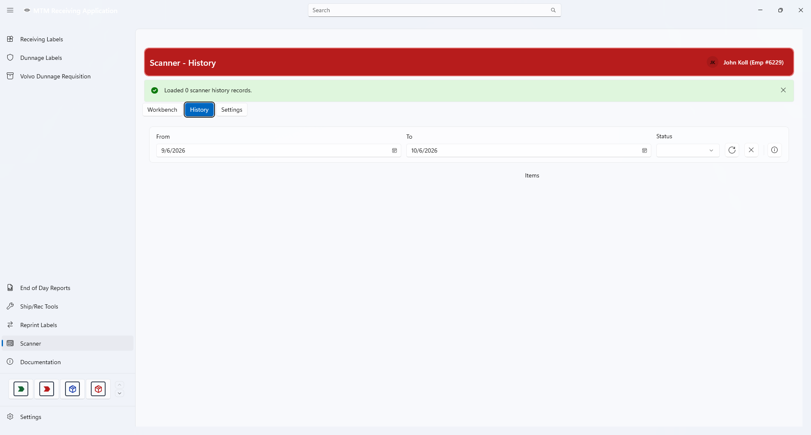

Scanner History
History is a read-only view of scanner lists that have already been worked on. Use it to answer the question “what did we move, and when?”
What History Shows
The History tab lists past scanner sessions. Selecting one shows the individual lines that were in it — part number, source location, and destination.
- History is reference only. Nothing on this tab can be edited or re-sent.
- To move material again, go back to the Workbench and build a new list.
- Your current list is not in History — it stays on the Workbench until you clear it.


Filters on top · past sessions on the left · the selected session’s lines on the rightFiltering the List
History opens with a sensible default range so it is never showing everything at once. Four controls sit across the top:
| Control | What it does |
|---|---|
| From | The earliest session date to include. |
| To | The latest session date to include. |
| Status | Narrows the list to one session status, or leave it blank for all. |
| Refresh | Reloads the list using the filters you have set. |
| Clear filters | Resets the dates and the status back to their defaults and reloads. |
Sessions and Lines
The lower half of the screen splits into two lists that work together.
Click a session on the left and its lines appear on the right. Nothing happens until you select a session, so the right-hand list starts empty.
Reading a Past List
Each line in the Items list shows the same four things you saw on the Workbench, in the same order:
- Line number — its position in that session.
- Part — the part number that was moved.
- From — the source location.
- To — the destination location.